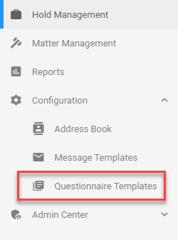
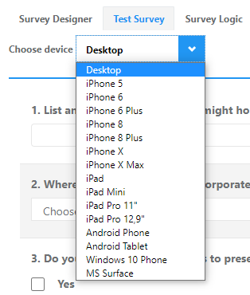
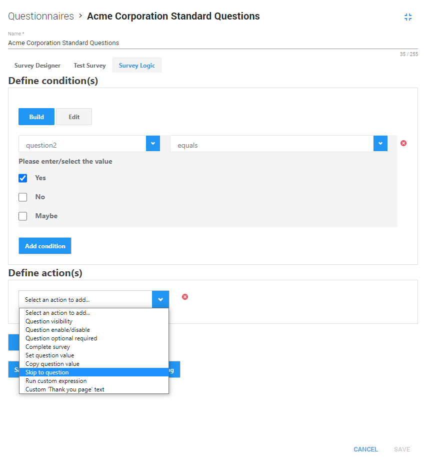

The Questionnaire Templates page contains all Questionnaire Templates that can be used for a hold. Questionnaire results help to get a better understanding of the data set and discover more sources of information.

View created questionnaire templates and filter/sort them via the columns.
Note: Filtering/sorting works the same on all pages.
View a short animation of filtering and sorting on this page: Hold Management.
To add/remove columns, select the Settings icon
Then, select Columns and (de)select the appropriate columns.
Select
Note: This step is skipped when creating or editing a template via the Questionnaires Tab.
With the icon in the top right corner you can switch from and to full screen mode.
Exit full screen
Full screen
Define/edit a Name. Below the Name field, you can switch from Survey Designer to Test Survey to Survey Logic.
Survey Designer
Create or Edit a Questionnaire; Select
question types (or drag&drop them) from the Toolbox to add them to the (first) page of the questionnaire.
Edit the selected questions or
export them as a PDF. In the Properties pane, define the settings for this survey, the pages and the questions.
When finished, click Save. If not already a template, you can now save it as one.
Please note that when you remove a custom questionnaire, it will be deleted. If you want to be able to use it again, it needs to be saved as a template.
Test Survey
Test how the survey (questionnaire) will be displayed on a selected device.

Survey Logic
Create rules to customize the flow of the survey. For example, when a certain answer is given on a specific question, you might want the custodian to answer another selected question.

Edit a Questionnaire Template via the
Edit Questionnaire Template icon

Delete a single Questionnaire Template
via the
Delete Questionnaire Template
icon

Delete multiple Questionnaire Templates
by selecting them and clicking the
Delete selected Questionnaire Templates
icon

After edit or delete actions, update the Questionnaire Templates View with the
Refresh
icon

When you want to create a new Questionnaire Template with just some minor changes to an existing one, clone the existing template.
Duplicate a Questionnaire Template via the
Clone Questionnaire Template
icon

Export all your Questionnaire Templates as CSV, Excel or PDF.
First, select the Settings icon
Then, select Export As... and select the format to which you want to export.
The Questionnaire Templates View might have been adjusted by filtering, sorting and/or by a specific selection of columns (via Settings > Columns).
To save this new view, select the Settings icon
Then, select Save View.